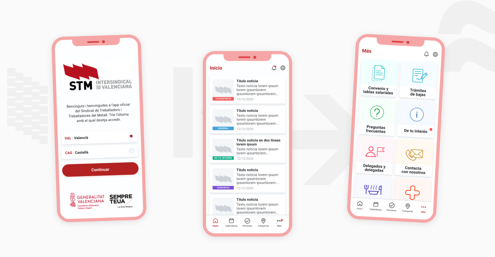
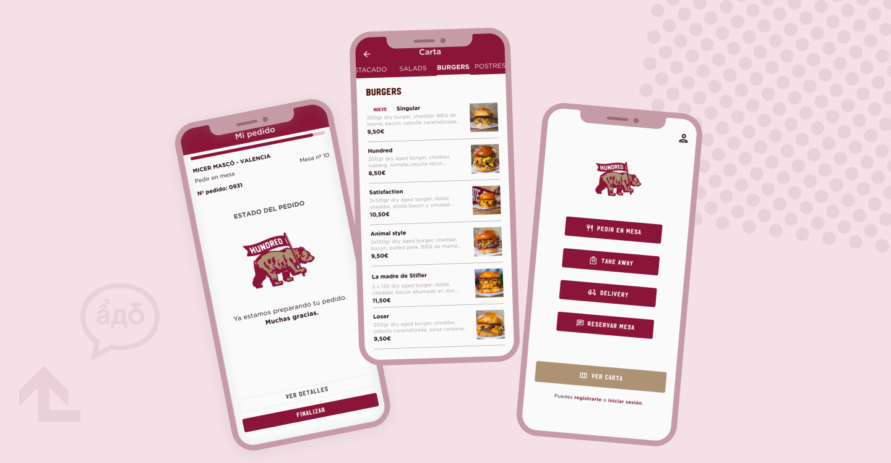
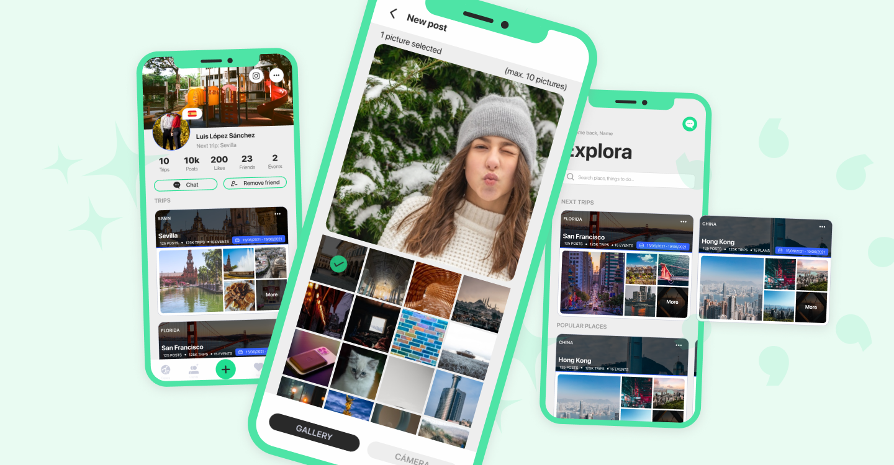
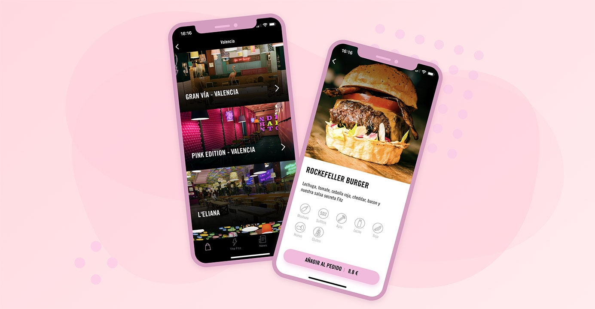

STM Ford
A native application centralising workplace documentation, employee services, calendars, medical areas and maps.

A native application centralising workplace documentation, employee services, calendars, medical areas and maps.

Table ordering and home delivery connected to the restaurant backend and administration platform.

A travel social network combining destination discovery, matching, messaging and shared photographs.

A native restaurant experience supported by a Django backend and administration system.
A connected application built across the product interface, backend and supporting web services.